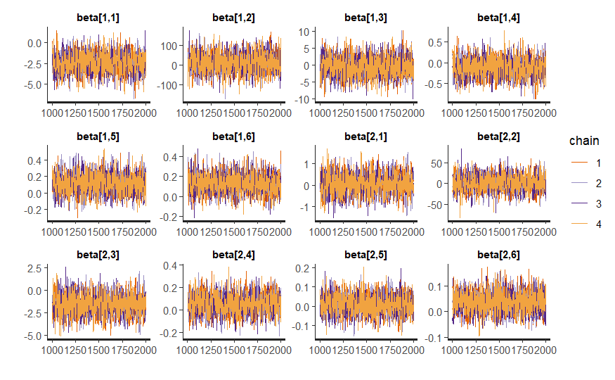
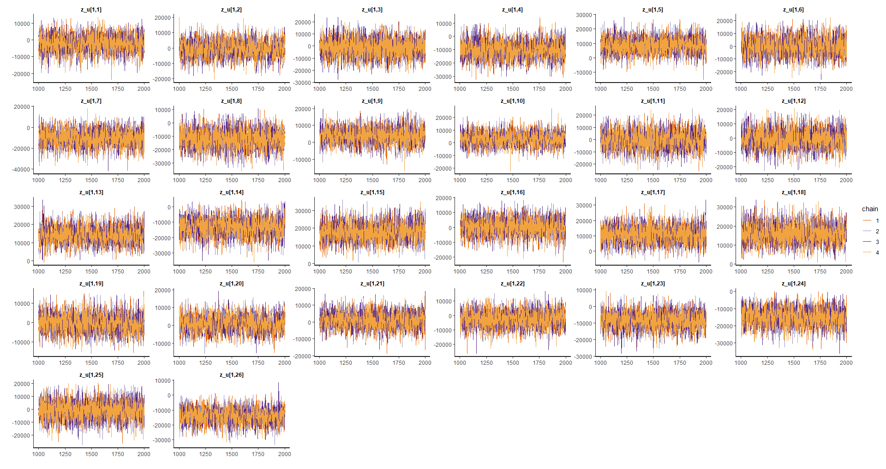
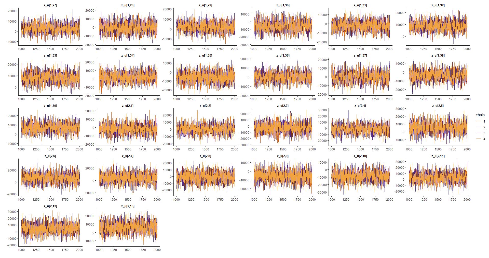
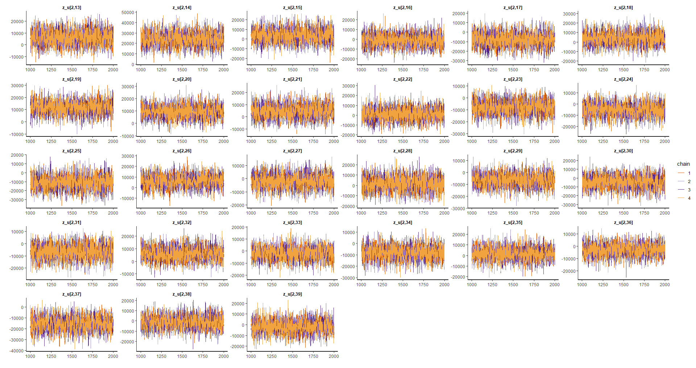
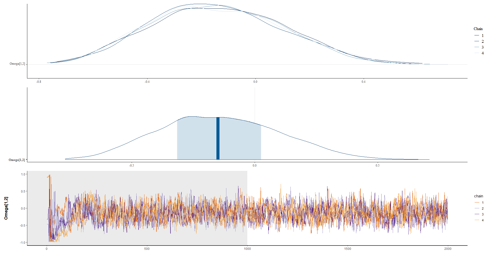
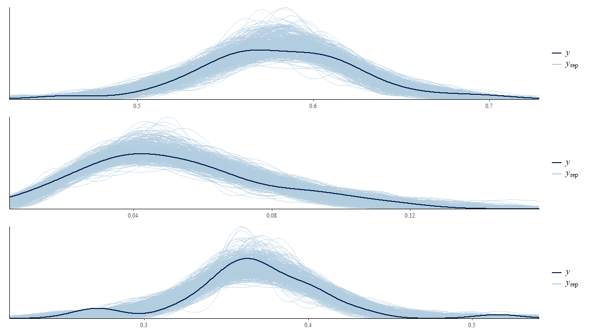

4.7 Model validation
Model validation is essential to assess a model’s ability to accurately and reliably predict future outcomes. In the case of a multinomial response area model, validation focuses on measuring the model’s accuracy in predicting different response categories. The main objective of validation is to determine if the model can generalize well to unseen data and provide accurate predictions. This involves comparing the model’s predictions to observed data and using evaluation metrics to measure model performance. Model validation is crucial to ensure prediction quality and the model’s reliability for use in future applications.
infile <- paste0("Recursos/05_Empleo/05_model_bayes_multinomial_cor.Rds")
model_bayes <- readRDS(infile)
#--- Exporting Bayesian Multilevel Model Results ---#
paramtros <- summary(model_bayes)$summary %>% data.frame()
tbla_rhat <- mcmc_rhat_data(paramtros$Rhat) %>%
group_by(description) %>%
tally() %>% mutate(Porcen = n/sum(n)*100)
tbla_rhat %>% tba()| description | n | Porcen |
|---|---|---|
| hat(R) <= 1.05 | 599 | 100 |
Fixed effects
efecto_fijo <- grep(pattern = "beta",
x = rownames(paramtros),
value = TRUE)
p_fijo <- traceplot(model_bayes, pars = efecto_fijo)
p_fijo
Random effects
efecto_aleatorio <- grep(pattern = "z_u",
x = rownames(paramtros),
value = TRUE)
p_alea1 <- traceplot(model_bayes, pars = efecto_aleatorio[1:26])
p_alea2 <- traceplot(model_bayes, pars = efecto_aleatorio[27:(26*2)])
p_alea3 <- traceplot(model_bayes, pars = efecto_aleatorio[(26*2):78])   ### Estimated values for the correlation matrix {-}
## Valores estimados para la matriz de correlación
omega12 <- summary(model_bayes, pars = "Omega[1,2]")$summary
plot_omega <- Plot_dens_draws(model_bayes, pars = "Omega[1,2]")
4.7.1 Posterior predictive distribution
theta_dir <- indicador_dam1 %>%
transmute(dam2,
n = n_desocupado + n_ocupado + n_inactivo,
Ocupado, Desocupado, Inactivo)
color_scheme_set("brightblue")
theme_set(theme_bw(base_size = 15))
y_pred_B <- as.array(model_bayes, pars = "theta") %>%
as_draws_matrix()
rowsrandom <- sample(nrow(y_pred_B), 100)
theta_1<- grep(pattern = "1]",x = colnames(y_pred_B),value = TRUE)
theta_2<- grep(pattern = "2]",x = colnames(y_pred_B),value = TRUE)
theta_3<- grep(pattern = "3]",x = colnames(y_pred_B),value = TRUE)
y_pred1 <- y_pred_B[rowsrandom,theta_1 ]
y_pred2 <- y_pred_B[rowsrandom,theta_2 ]
y_pred3 <- y_pred_B[rowsrandom,theta_3 ]
p1 <- ppc_dens_overlay(y = as.numeric(theta_dir$Ocupado), y_pred1)/
ppc_dens_overlay(y = as.numeric(theta_dir$Desocupado), y_pred2)/
ppc_dens_overlay(y = as.numeric(theta_dir$Inactivo), y_pred3)